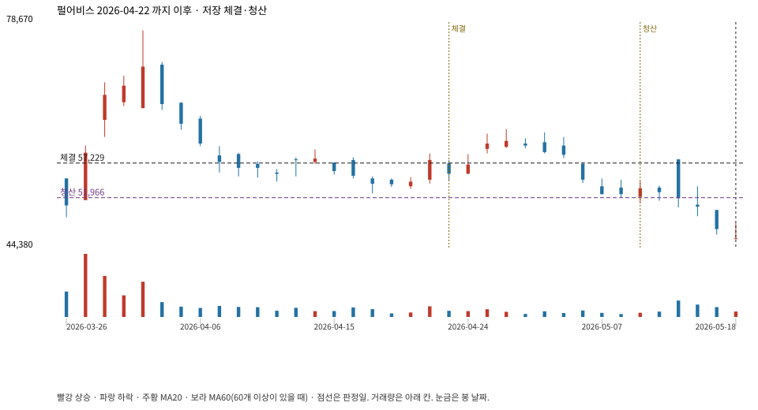

계좌를 다시 돌리지 않았다. 아래는 저장된 주문·체결·청산·비용·손익이다.

{
"case_id": "d446aeaedf57da8f",
"status": "closed",
"trade": {
"symbol": "263750.KQ",
"signal_date": "2026-04-22",
"quantity": 29,
"entry": 57700,
"stop": 51992,
"target": 77400,
"planned_risk": 169466.19811599993,
"reserved_cash": 1674973.2999999998,
"fill": {
"date": "2026-04-23",
"price": 57228.6,
"fee": 1659.6294
},
"exit": {
"date": "2026-05-11",
"price": 51966.004,
"reason": "stop",
"net_pnl": -155781.92751599965,
"ambiguous_bar": false
}
},
"cost": "research fee 10bp each side, slippage 5bp; amounts below are the stored ledger, not a new run",
"chart": "c\/d446aeaedf57da8f.svg"
}